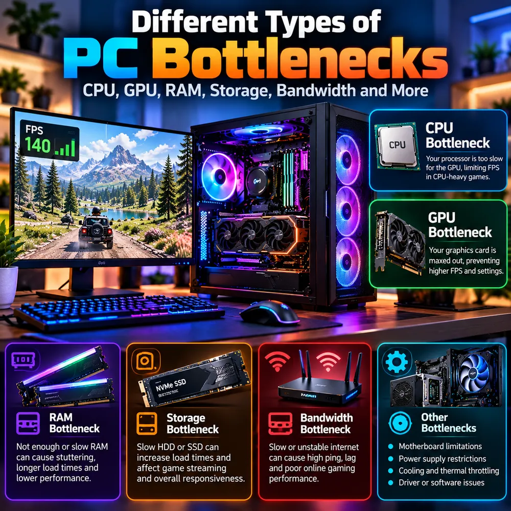

Different Types of PC Bottlenecks: CPU, GPU, RAM, Storage and Bandwidth
Most people think a PC bottleneck means a weak CPU or a weak graphics card. In reality, any part of your system can become the limit. This guide walks through every common type of bottleneck, how to recognize it, and which ones a calculator can and cannot catch.

The quick answer
A PC bottleneck is any component, setting or connection that limits the performance of the rest of your system. The most common types are:
- CPU bottleneck: the processor is too slow to keep up with the graphics card.
- GPU bottleneck: the graphics card is working at its limit and cannot draw frames any faster.
- RAM bottleneck: not enough or too slow memory causes stutter and long load times.
- Storage bottleneck: a slow drive delays loading and asset streaming.
- Bandwidth bottleneck: a slow or unstable network, or a limited internal link, restricts data flow.
- Other limits: motherboard, power supply, cooling and drivers or software.
Only some of these show up in a typical calculator. Understanding all of them helps you avoid blaming the wrong part.
CPU bottleneck
A CPU bottleneck means the processor is too slow for the graphics card, so frames are produced slower than the GPU could draw them. It is most common in CPU-heavy games such as large strategy titles, crowded open worlds and competitive shooters running at very high frame rates. The tell-tale signs are GPU usage well below its maximum while one or more CPU cores are pinned. This is often called a processor bottleneck. For a deeper comparison, read our guide to CPU vs GPU bottlenecks.
GPU bottleneck
A GPU bottleneck means the graphics card is the slowest part, with usage near 100%. This is normal and often desirable, because it means the card is fully used. It becomes a problem when the frame rate is lower than you want at the resolution and settings you prefer. Typical fixes are lowering demanding settings, using upscaling or upgrading the card. See the GPU bottleneck guide for details on VRAM and ray tracing.
RAM bottleneck
Memory can limit performance in two ways: capacity and speed or configuration.
- Not enough RAM: when memory fills up, Windows uses storage as overflow, which is far slower. The result is freezes, stutter and slow loading.
- Slow or poorly configured RAM: memory running below its rated speed, or in single-channel mode, can reduce frame rates, especially on CPUs that benefit from memory speed.
To check, watch memory use during a long play session. If it reaches the limit, add capacity. Enable XMP or EXPO in the BIOS and use matched sticks in dual-channel. Our RAM bottleneck guide and 16GB RAM article go deeper. Note that most online calculators focus on the CPU and GPU, so a RAM bottleneck calculator style estimate is not something to rely on. Measure RAM yourself instead.
Storage bottleneck
Modern games stream textures and world data from the drive while you play. A mechanical hard drive can cause long load times, texture pop-in and stutter when moving through a game. A SATA SSD is a big step up from a hard drive, and an NVMe SSD can improve load times further, although the difference between SATA and NVMe in actual frame rate is usually small. Storage rarely changes the average FPS in a game that is already loaded, but it can make the experience feel worse. Compare them in our SSD vs HDD vs NVMe guide.
Bandwidth bottleneck
Bandwidth is a word used in several ways, which makes a bandwidth bottleneck test confusing:
- Network bandwidth: a slow or unstable internet connection causes high ping, lag, rubber-banding and poor online gaming performance. Run a speed test and check ping and packet loss. A wired Ethernet connection is usually steadier than Wi-Fi.
- Memory bandwidth: RAM speed and channel count affect how quickly the CPU can move data. Integrated graphics are especially sensitive to this.
- PCIe bandwidth: the link between the graphics card and the motherboard. On modern desktop systems this is rarely the main limit, but a GPU installed in a slower slot, or a low-end card running on fewer lanes, is worth checking with a tool like GPU-Z.
Network problems in particular are invisible to a CPU or GPU calculator, so check them separately for online games.
Motherboard limitations
The motherboard sets the ceiling for several things: supported CPUs, RAM speed and type, the PCIe generation of its slots and the number of storage connectors. A budget board can prevent a fast memory kit from reaching its rated speed or restrict how far you can push a processor. When planning upgrades, check the board's specifications and any BIOS update requirements. Our upgrade checklist includes this step.
Power supply restrictions
An underpowered or low-quality power supply can cause crashes, restarts or reduced performance under load, particularly with a high-end GPU. A power supply does not slow a PC down in a smooth, gradual way. It usually either supplies enough or causes instability. Follow the graphics card maker's recommended wattage and make sure the right connectors are available. Read whether a PSU can cause a bottleneck for more detail.
Cooling and thermal throttling
Heat is one of the most common hidden limits. When a CPU or GPU gets too hot, it lowers its own clock speed to protect itself, and performance drops. This can mimic a bottleneck, but the cause is cooling, not component balance. Dust, weak airflow and old thermal paste are typical causes. Tell the two apart with our guide to thermal throttling vs CPU bottleneck.
Drivers and software
Outdated or corrupted drivers, background processes, a laptop in battery mode, overlays and misconfigured settings can all limit performance without any hardware being at fault. A clean driver reinstall, a restart and closing unnecessary software are worth trying before concluding that a part is too slow.
How to find which type you have
- Monitor CPU, GPU, RAM, disk and temperature during real gameplay. See how to check PC usage.
- Match the numbers to a type above. A part near its limit with others idle is the usual suspect.
- Estimate the CPU and GPU balance with the computer bottleneck calculator to compare against what you measured.
- Fix the cheapest likely cause first, and retest. Our guide to fixing a PC bottleneck lists the order.
Conclusion
A bottleneck can come from the processor, graphics card, memory, storage, network, motherboard, power, cooling or software. The key is to measure instead of assume. Once you know which type you are dealing with, the fix is usually clear and often cheaper than expected.
Frequently Asked Questions
What are the main types of PC bottlenecks?
The main types are CPU, GPU, RAM, storage and bandwidth bottlenecks. System-level limits such as the motherboard, power supply, cooling and drivers can also restrict performance.
Can RAM cause a bottleneck?
Yes. Too little RAM causes stutter and freezes when memory fills up, and slow or single-channel RAM can reduce frame rates. Check memory usage during play and enable XMP or EXPO in the BIOS.
Does storage affect FPS?
Mostly it affects load times and streaming stutter rather than average FPS. A slow hard drive can cause texture pop-in and hitching, so modern games should be installed on an SSD.
What is a bandwidth bottleneck?
It is a limit on how fast data can move. In online games it usually means a slow or unstable network connection. It can also refer to memory bandwidth or the PCIe link between the graphics card and motherboard.
Can a calculator detect RAM or storage bottlenecks?
Most calculators focus on the CPU and GPU pairing, so they do not reliably detect RAM, storage or network limits. Monitor those parts yourself during gameplay.